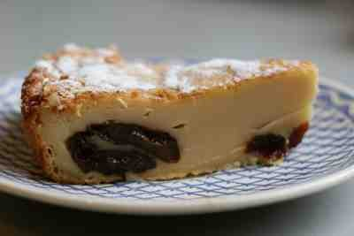

Home
Far Breton

Description
Far Breton is a traditional Brittany baked custard—firm like a flan—often studded with prunes, lightly sweet and eggy.
Ingredients
- 500 ml milk
- 3 eggs
- 120 g flour
- 80 g sugar
- 1 tsp vanilla
- Pinch salt
- 100-150 g pitted prunes
- Butter for the dish
Steps
- Heat oven to 300°C. Butter a 22cm round dish.
- Whisk eggs + sugar + vanilla. Add flour, then milk -> smooth batter.
- Scatter prunes in dish, pour batter, dot with a little butter.
- Bake 35-40 min until puffed and golden. Rest 10 min. Eat warm or cold.